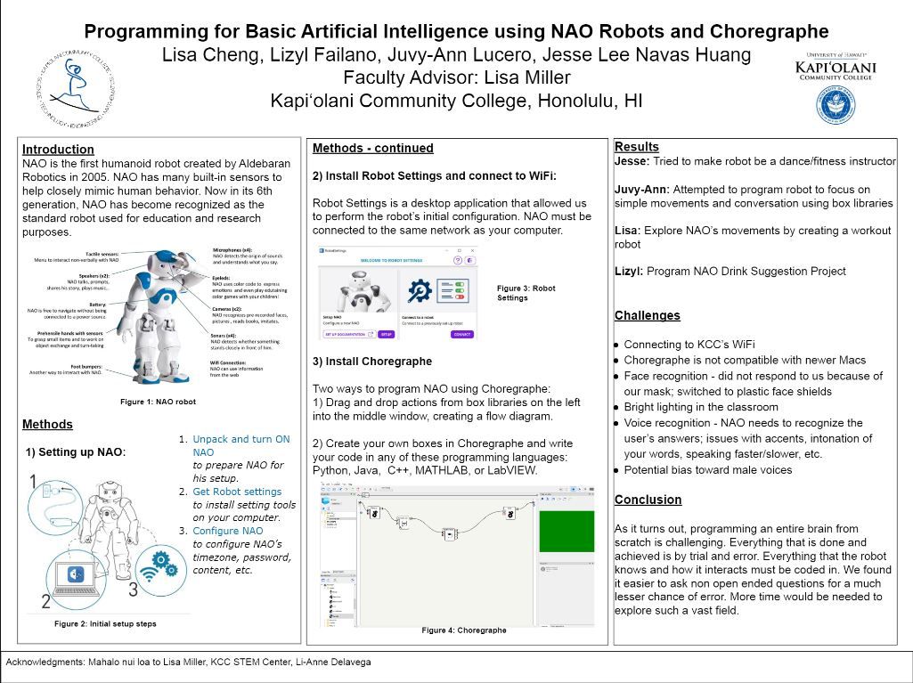

During the Fall 2022 semester, I took on a robotics project at Kapiolani Community College. This project involved working with NAO, a humanoid robot manufactured by Aldebaran Robotics. For the most part, the project functioned as a typical class. The class consisted of 5 people: me and 4 others. Each of us came up with our own plan for what we wanted NAO to do. I chose to program my NAO to function as a fitness/tai chi instructor. For our final project, we had to present our finished routines at an end of year event known as the “STEM Expo”, where all the students involved in similar courses presented their findings. 3 of the other members and I chose to present as a group.
Working with the robot involved utilizing a software known as Choreographe. Choreographe was relatively simple to work with, requiring no real serious programming knowledge. There was an optional way to program special functions utilizing python, but I didn’t really bother with that. The main way to interact with Choreographe was dragging and dropping different actions into a main work area, then connecting these actions to form a routine. For example, you could drag a “talk” action into the work area, type out the words you want it to say, then connect it to a walk action. Thus, the robot would say its programmed line, then perform the walk. The problem lied in getting the robot to do actions at the same time.
Choreographe’s simple interface worked well for sequencing actions, but struggled with creating complex routines, where multiple actions occur at the same time. My solution was to simply send out two connecting points at the same time. However, since actions had different lengths, sometimes they would not be perfectly synced. To go back to the previous example, maybe NAO would finish saying its line before it was able to cross the specified distance, resulting in dead air. The solution then became to artifically modify the length of the actions, either through natural offset or putting in a “buffer action” to get them to sync up. This process involved a lot of hard trial and error. There was no real work around to it; you just had to adjust the offset/action length, run the program to test, then readjust as needed. This was awfully close to how working with robots functioned, and learning as a whole.
This project taught me that working with robots is a lot of trial and error. An experience that stands out was when we first started working with the robots, and were simply issuing them random commands to test out functionality. For example, if you told the robot to run, sometimes it would and sometimes it wouldn’t. Eventually, you realized that you had to modify the way you pronounced the word ‘run’. Then, once you’d figured out the pronunciation, the robot ran every time. This is a lot like actual learning. You do something then evaluate the results. If it didn’t work, you keep trying something until it does.
Here is a Youtube video showcasing my robot’s routine.